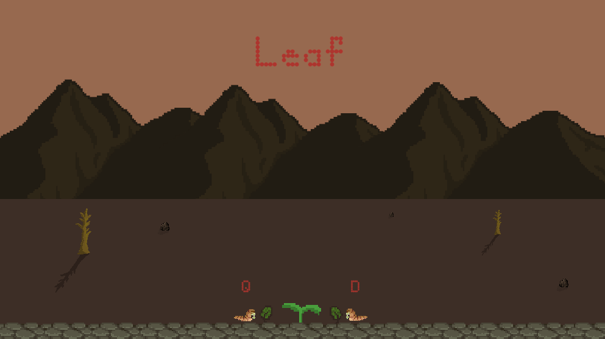
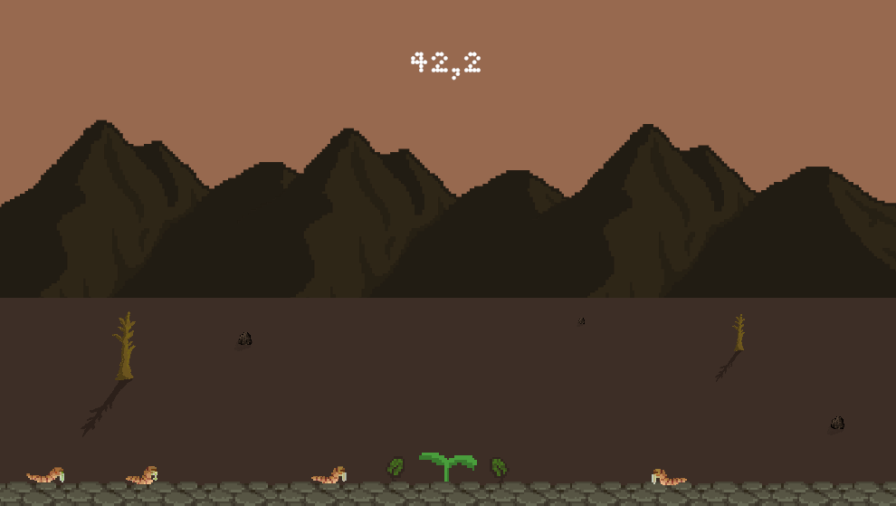
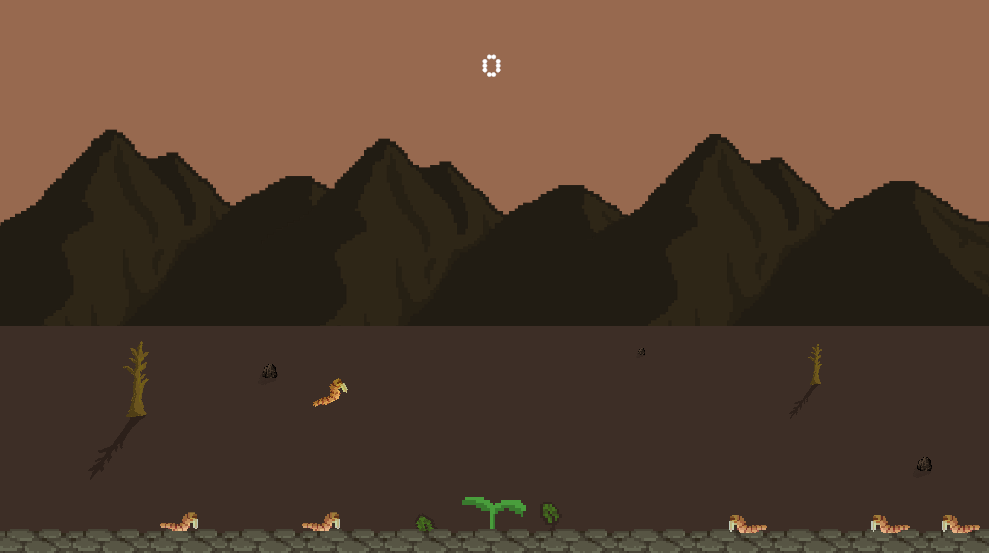

Leaf
Leaf est un petit jeu de reflexes développé lors d’une game jam en Septembre 2020. Divers design patterns y ont été implémentés tels que les singletons, observer et object factory. Il a aussi été question d’expérimenter avec la mise en place d’une cinématique simple de quelques secondes afin d’en comprendre le déroulement. (Transitions, mise en scène, ratios, etc..)
Nous y contrôlons deux feuilles, cherchant à défendre la dernière pousse de vie dans un paysage désert, le dernier espoir.
Une recherche sur la direction artistique a permis au jeu de transmettre une impression de paysage mort lors de la première phase, puis d’y préserver la vie pour qu’elle puisse y survivre et se développer.
Lien vers le jeu
Mes contributions :
- Développement du concept
- Prototypage
- Architecture du jeu
- Développement des mécaniques d'attaque
|
- Implémentation des animations
- UI/UX
- Direction artistique / sonore
- Optimisations
|
|

|

|
|

|

|